← Mục lục sáchSÁCH DỊCH · ECGBOOK · CHƯƠNG 16
CƠ CHẾ RỐI LOẠN NHỊP TIM
Điện sinh lý học của tim
- Tế bào cơ tim (cardiomyocytes) có khả năng tự động (automaticity):
- Tự phát sinh xung động (điện thế hoạt động – action potential)
- Dẫn truyền xung động:
- Nhanh qua hệ thống dẫn truyền (conduction system)
- Chậm qua cơ tim công năng (working myocardium)
- Ức chế vượt tần (overdrive suppression)
- Là một nguyên lý điện sinh lý cơ bản của rối loạn nhịp
- Ổ có tần số cao nhất (nút xoang – SA node)
- Làm bất hoạt các ổ có tần số thấp hơn
- Thời kỳ trơ (refractory period)
- Là khoảng thời gian ngay sau khi tế bào cơ tim bị khử cực bởi một xung động
- Trong khoảng thời gian này, tế bào cơ tim không thể bị kích thích
- Không đáp ứng với một xung động khác
Rối loạn nhịp
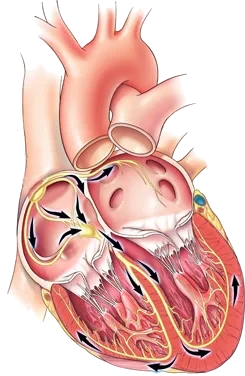
- Về mặt sinh lý, tim đập theo nút xoang với tần số 60-100/phút.
- Xung động được phát sinh bởi nút xoang (nhịp xoang – sinus rhythm)
- Rối loạn nhịp (arrhythmia) là một thuật ngữ rất rộng:
- Về cơ bản, nó chỉ tình trạng rối loạn nhịp tim sinh lý (rối loạn của nhịp xoang)
- Tim đập theo một ổ khác ngoài nút xoang
- Hoặc xảy ra rối loạn của nút xoang
Các cơ chế rối loạn nhịp tim
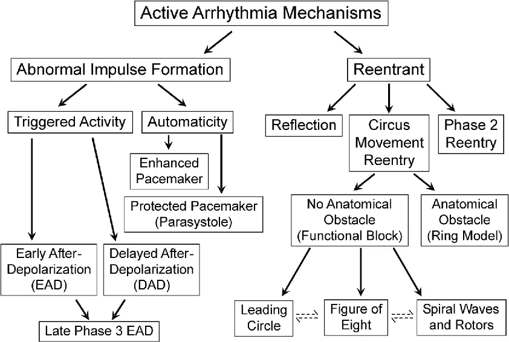
- Rối loạn nhịp xảy ra qua 3 cơ chế:
- Tính tự động (automaticity)
- Thay đổi tính tự động bình thường
- Tính tự động bất thường
- Hoạt động khởi kích (triggering activity)
- Hậu khử cực sớm (early afterdepolarization)
- Hậu khử cực muộn (late afterdepolarization)
- Vào lại (reentry)
- Vào lại giải phẫu
- Vào lại chức năng
- Tính tự động (automaticity)
1. Tính tự động
- Mỗi tế bào cơ tim đều có khả năng tự động (tự phát sinh xung động)
- Xung động được phát sinh với tần số cao nhất ở nút xoang (ổ tạo nhịp nguyên phát – primary pacemaker)
- Nút xoang sau đó làm bất hoạt các ổ tạo nhịp thứ phát (secondary pacemakers) thông qua ức chế vượt tần:
- Nút nhĩ thất, sợi Purkinje ở tâm thất, cơ tim nhĩ
- Nút xoang sau đó làm bất hoạt các ổ tạo nhịp thứ phát (secondary pacemakers) thông qua ức chế vượt tần:
- Tính tự động có thể gây rối loạn nhịp qua 2 cơ chế:
- Thay đổi tính tự động bình thường
- Tính tự động bất thường
Tính tự động và điện thế hoạt động
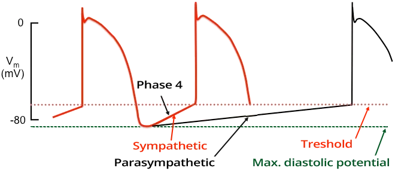
- Tốc độ của tính tự động (tần số xung động) phụ thuộc vào:
- Điện thế tâm trương tối đa (giá trị thấp nhất của điện thế hoạt động)
- Ngưỡng điện thế hoạt động (khi vượt qua ngưỡng này, khử cực được khởi phát)
- Pha 4 của điện thế hoạt động (phụ thuộc vào độ dốc của đường cong, đường cong dốc hơn sẽ đạt tới ngưỡng sớm hơn)
- Tính tự động chủ yếu chịu ảnh hưởng của hệ thần kinh tự chủ (làm thay đổi đường cong pha 4 của điện thế hoạt động):
- Giao cảm (gây nhịp nhanh xoang)
- Phó giao cảm (gây nhịp chậm xoang)
- Rối loạn nhịp do thay đổi tính tự động bình thường có hiện tượng khởi động dần (warm up)
- Tính tự động tăng chậm (tần số tăng chậm) và nhịp nhanh không khởi đầu bằng ngoại tâm thu
- Trong vào lại, nhịp nhanh khởi đầu bằng ngoại tâm thu và tần số tăng từ nhát bóp (QRS) này sang nhát bóp (QRS) khác
- Thay đổi tần số đột ngột được gọi là kịch phát (paroxysm) — cơn kịch phát khởi đầu bằng ngoại tâm thu
Thay đổi tính tự động bình thường
Thay đổi tính tự động bình thường
- Là thay đổi tính tự động bình thường ở các ổ tạo nhịp của tim:
- Nút xoang (ổ tạo nhịp nguyên phát)
- Bộ nối nhĩ thất (ổ tạo nhịp thứ phát)
- Sợi Purkinje ở tâm thất (ổ tạo nhịp cấp ba – tertiary pacemaker)
- Các rối loạn nhịp do thay đổi tính tự động bình thường
- Nhịp nhanh xoang (sinus tachycardia)
- Nhịp chậm xoang (sinus bradycardia)
- Nhịp nhanh xoang không thích hợp (inappropriate sinus tachycardia)
- Nhịp tự thất gia tốc (accelerated ventricular rhythm)
- Nhịp nhanh bộ nối (junctional tachycardia)
Tính tự động bất thường
Tính tự động bất thường
- Là sự hoạt hoá tính tự động ở những vùng không phải ổ tạo nhịp của tim
- Liên quan tới cơ tim nhĩ và cơ tim thất, là những vùng bình thường không có tính tự động trong điều kiện sinh lý
- Xảy ra trong rối loạn điện giải (mineral imbalance), thiếu máu cục bộ (ischemia), pH nội bào thấp, dư thừa catecholamine
- Các rối loạn nhịp do tính tự động bất thường
- Ngoại tâm thu nhĩ, bộ nối, thất
- Nhịp nhanh nhĩ lạc chỗ (ectopic atrial tachycardia)
- Nhịp tự thất gia tốc
- Nhịp nhanh thất (trong thiếu máu cục bộ cấp hoặc tái tưới máu)
- Nhịp đôi song hành (parasystole)
2. Hoạt động khởi kích
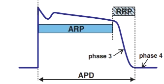
- ARP (thời kỳ trơ tuyệt đối – absolute refractory period)
- Trong ARP, tế bào cơ tim không đáp ứng với một xung động khác
- RRP (thời kỳ trơ tương đối – relative refractory period)
- Trong RRP, tế bào cơ tim chỉ đáp ứng với xung động trên ngưỡng
- Hoạt động khởi kích nghĩa là
- Một xung động xuất hiện trong tế bào cơ tim
- Ngay sau khi khử cực (trong thời kỳ ARP)
- Một điện thế hoạt động sớm được tạo ra, và nó khởi phát rối loạn nhịp
- Một xung động xuất hiện trong tế bào cơ tim
- Hoạt động khởi kích có thể gây rối loạn nhịp qua 2 cơ chế:
- Hậu khử cực sớm (xảy ra trong pha 2 và pha 3)
- Hậu khử cực muộn (xảy ra trong pha 4)
Hậu khử cực sớm
Hoạt động khởi kích do hậu khử cực sớm
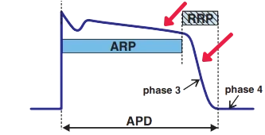
- Khử cực xảy ra sớm
- Trong pha 2 hoặc pha 3 của điện thế hoạt động
- Xảy ra khi có kéo dài điện thế hoạt động
- Thấy trên ECG là khoảng QT kéo dài
- Các yếu tố nguy cơ của hậu khử cực sớm gồm:
- Hạ kali máu (hypokalemia)
- Hạ magie máu (hypomagnesemia)
- Nhịp chậm (bradycardia)
- Các rối loạn nhịp liên quan đến hậu khử cực sớm
- Xoắn đỉnh (Torsades de Pointes – TdP)
- Là một dạng nhịp nhanh thất đa hình
- Xảy ra khi có khoảng QT kéo dài
- Xoắn đỉnh (Torsades de Pointes – TdP)
Hậu khử cực sớm và xoắn đỉnh
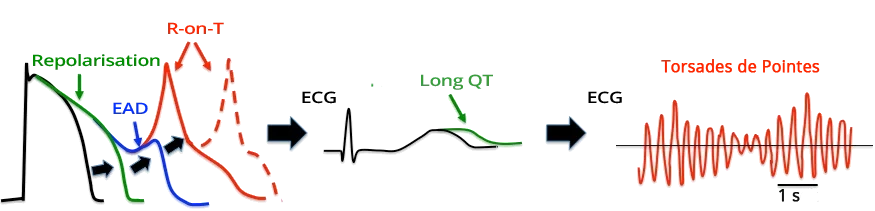
- Khi có khoảng QT kéo dài
- Điện thế hoạt động bị kéo dài - chủ yếu là tái cực (đường cong màu xanh lá)
- Tái cực kéo dài được thấy trên ECG trong nhịp xoang dưới dạng khoảng QT kéo dài
- Hậu khử cực sớm (EAD)
- Khởi phát một ngoại tâm thu thất (hiện tượng R trên T – R-on-T phenomenon)
- Và khởi động xoắn đỉnh
- TdP được duy trì bởi cơ chế vào lại do sự phân tán tái cực xuyên thành (transmural dispersion of repolarization)
- Khởi phát một ngoại tâm thu thất (hiện tượng R trên T – R-on-T phenomenon)
Hậu khử cực sớm (điện thế hoạt động)
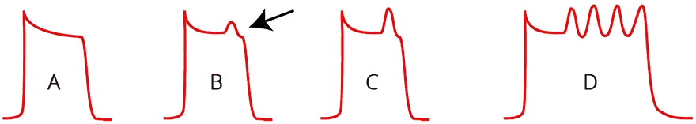
- (A) Điện thế hoạt động bình thường
- Điện thế hoạt động được thấy trên ECG là khoảng QT
- (B) Hậu khử cực sớm
- Hậu khử cực sớm xảy ra ở pha 2 của điện thế hoạt động
- Không có điện thế hoạt động mới nào được tạo ra (vì hậu khử cực sớm không vượt qua "ngưỡng hoạt hoá")
- (C) Hậu khử cực sớm và điện thế hoạt động mới
- Hậu khử cực sớm khởi phát một điện thế hoạt động mới
- Điều này được thấy trên ECG là một ngoại tâm thu thất (hiện tượng R trên T)
- (D) Xoắn đỉnh (TdP)
- Về mặt học thuật, người ta thống nhất rằng TdP được khởi phát bởi hậu khử cực sớm
- Tuy nhiên, cơ chế trong lúc TdP còn nhiều tranh cãi
- Nó có thể liên quan tới các hậu khử cực sớm lặp đi lặp lại (như trong hình D)
- Hoặc có thể do vào lại trong sự phân tán tái cực xuyên thành
- Cơ chế này nhiều khả năng hơn
Hậu khử cực muộn
Hoạt động khởi kích do hậu khử cực muộn
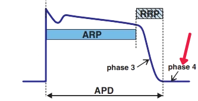
- Khử cực xảy ra sớm
- Trong pha 4 của điện thế hoạt động
- Các yếu tố nguy cơ của hậu khử cực muộn gồm:
- Ngộ độc digoxin (digoxin toxicity)
- Catecholamine (nồng độ cao)
- Tăng calci máu (hypercalcemia)
- Xảy ra trong lúc nhịp nhanh
- Các rối loạn nhịp liên quan đến hậu khử cực muộn
- Nhịp nhanh thất hai chiều (bidirectional ventricular tachycardia)
- Trong ngộ độc digoxin
- Trong gắng sức thể lực cực độ (catecholamine)
- Nhịp tự thất gia tốc trong nhồi máu cơ tim
- Nhịp nhanh thất hai chiều (bidirectional ventricular tachycardia)
Hậu khử cực muộn (điện thế hoạt động)
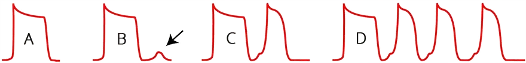
- (A) Điện thế hoạt động bình thường
- Điện thế hoạt động được thấy trên ECG là khoảng QT
- (B) Hậu khử cực muộn
- Ở pha 4 của điện thế hoạt động,
xảy ra hậu khử cực muộn - Không có điện thế hoạt động mới nào được tạo ra (vì hậu khử cực muộn không vượt qua "ngưỡng hoạt hoá")
- Ở pha 4 của điện thế hoạt động,
- (C) Hậu khử cực muộn và điện thế hoạt động mới
- Hậu khử cực muộn đã khởi phát một điện thế hoạt động mới
- Điều này được thấy trên ECG là một ngoại tâm thu thất
- Rối loạn nhịp
- Các hậu khử cực muộn lặp đi lặp lại được thấy trên ECG dưới dạng rối loạn nhịp
- Có thể là nhịp tự thất gia tốc trong nhồi máu cơ tim
3. Vào lại
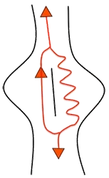
- Là cơ chế thường gặp nhất của rối loạn nhịp
- Xung động (điện thế hoạt động) di chuyển vòng tròn (thường gặp nhất là quanh một chướng ngại vật giải phẫu)
- Từ vòng vào lại, các xung động phát ra và hoạt hoá cơ tim
- Các xung động phát ra từ vòng vào lại giống hệt như phát ra từ nút xoang trong nhịp xoang
- Trước đây, cơ chế vào lại của nhịp nhanh trên thất (SVT) được gọi bằng các thuật ngữ:
- Reciprocating tachycardia, Circus movement tachycardia
- Các thuật ngữ này không còn được dùng nữa
Cơ chế vào lại
- Vào lại là sự di chuyển vòng tròn của cùng một xung động (điện thế hoạt động)
- Xung động không được gặp thời kỳ trơ của chính nó, vì điều đó sẽ làm chấm dứt vòng vào lại
- Xung động thường gặp nhất là đi vòng quanh một chướng ngại vật giải phẫu (chẳng hạn sẹo nhồi máu cơ tim)
Điện thế hoạt động
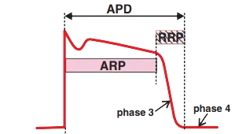
- Xung động trong cơ tim của tâm thất được thấy trên ECG là khoảng QT
- Bắt đầu bằng khử cực (pha 0)
- Kết thúc bằng tái cực (pha 4)
- Sau khử cực là ARP và RRP
- Trong ARP (thời kỳ trơ tuyệt đối)
- Tế bào cơ tim không đáp ứng với xung động tiếp theo
- Trong RRP (thời kỳ trơ tương đối)
- Tế bào cơ tim chỉ đáp ứng với xung động trên ngưỡng
- Trong ARP (thời kỳ trơ tuyệt đối)
Sự lan truyền của điện thế hoạt động
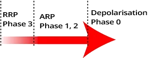
- Xung động lan truyền từ điểm xuất phát giống như một "mũi tên"
- Thực chất nó lan như khi ném một hòn đá xuống nước
- Các mũi tên hướng ra ngoài từ điểm xuất phát
- Đầu mũi tên đại diện cho khử cực
- Đuôi mũi tên đánh dấu điểm kết thúc của RRP (tái cực)
Vào lại và khoảng trống kích thích
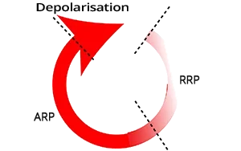
- Xung động di chuyển vòng tròn thường gặp nhất là quanh một chướng ngại vật giải phẫu
- Đầu mũi tên không được gặp thời kỳ trơ tuyệt đối
- Vòng vào lại sẽ bị gián đoạn
- Khoảng trống kích thích (excitation gap)
- Là đoạn nằm giữa đầu mũi tên và điểm kết thúc của ARP
- Là vùng có thể kích thích được bên trong vòng vào lại
- Có ý nghĩa quan trọng đối với thăm dò điện sinh lý
- Được dùng trong chẩn đoán và điều trị vào lại
Sự hình thành vòng vào lại
- Vào lại cần 3 điều kiện để xảy ra:
- Các đường dẫn song song để xung động đi vòng qua
- Các đường dẫn thường được ngăn cách bởi một chướng ngại vật giải phẫu (sẹo nhồi máu cơ tim)
- Block một chiều
- Xung động chỉ đi theo một chiều qua một đường dẫn
- Dẫn truyền chậm qua một đường dẫn
- Trong vòng vào lại, xung động chậm lại, nhờ đó đầu mũi tên không đuổi kịp thời kỳ trơ (đuôi mũi tên)
- Các đường dẫn song song để xung động đi vòng qua
- Vào lại được khởi phát bởi một ngoại tâm thu nhĩ hoặc ngoại tâm thu thất
Hoạt hoá tâm thất qua sợi Purkinje
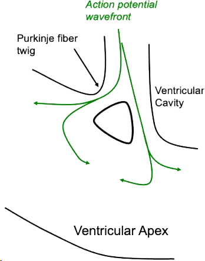
- Cơ tim thất được hoạt hoá bởi một xung động
- Từ hệ thống dẫn truyền qua sợi Purkinje
- Có 2 đường dẫn song song
- Các sợi được ngăn cách bởi một chướng ngại vật giải phẫu
- Đây là chướng ngại vật sinh lý (không phải sẹo nhồi máu)
- Các sợi được ngăn cách bởi một chướng ngại vật giải phẫu
- Phía sau chướng ngại vật, các xung động tiêu tán và biến mất
- Các xung động còn lại tiếp tục đi tới cơ tim
Sự hình thành đường dẫn truyền chậm
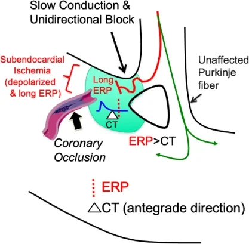
- Hẹp động mạch gây thiếu máu cục bộ dưới nội tâm mạc (subendocardial ischemia)
- Hẹp (stenosis) là thu nhỏ lòng mạch, tắc (occlusion) là bít tắc hoàn toàn
- Điện sinh lý thay đổi tại vùng thiếu máu cục bộ
- Vùng cơ tim thiếu máu cục bộ hình thành
- Block một bên
- Dẫn truyền chậm (dẫn truyền giảm dần – decremental conduction)
- Xung động sau đó đi tới cơ tim thất
- Chỉ qua 1 sợi Purkinje
- Vùng thiếu máu cục bộ chặn xung động lại
Khởi phát vòng vào lại
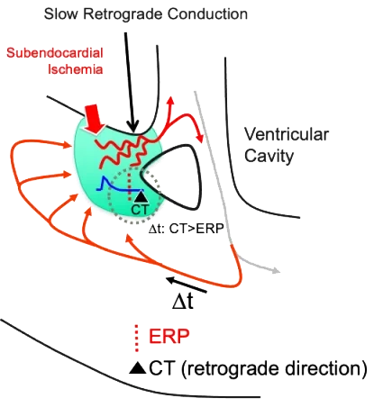
- Vào lại khởi đầu bằng một ngoại tâm thu nhĩ hoặc ngoại tâm thu thất
- Ngoại tâm thu đi vào vòng vào lại trong khoảng trống kích thích
- Xung động di chuyển
- Xuôi chiều (anterograde) chỉ qua 1 sợi Purkinje
- Ngược chiều (retrograde) qua phần thiếu máu cục bộ dẫn truyền chậm
- Ở cuối đường dẫn chậm
- Không còn xung động xuôi chiều trong ARP
- (ARP - thời kỳ trơ tuyệt đối)
- Xung động ngược chiều từ đường dẫn chậm:
- Bắt đầu di chuyển vòng tròn trong vòng vào lại
- Không còn xung động xuôi chiều trong ARP
Vòng vào lại
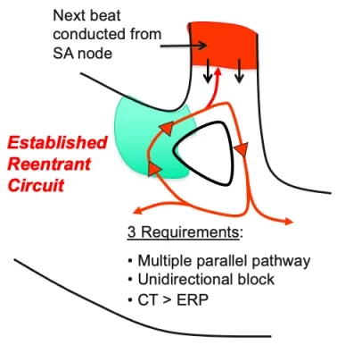
- Xung động di chuyển vòng tròn
- Xuôi chiều chỉ qua 1 sợi Purkinje
- Ngược chiều qua phần thiếu máu cục bộ dẫn truyền chậm
- Với mỗi vòng quay
- Các xung động thoát ra khỏi vòng vào lại
- Và hoạt hoá cơ tim
- Sự di chuyển vòng tròn của xung động trong vòng vào lại
- Luôn nằm trong vùng nhịp nhanh (tần số > 100/phút.)
- Vòng vào lại làm bất hoạt tất cả các ổ khác trong tim
- (ức chế vượt tần)
Phân loại vào lại
- Vào lại giải phẫu (thường gặp nhất)
- Vào lại chức năng
- Vào lại kiểu vòng dẫn đầu (leading circle reentry)
- Vào lại bất đẳng hướng (anisotropic reentry)
- Vào lại hình số 8 (figure of 8 reentry)
- Vào lại kiểu phản xạ (reflection reentry)
- Vào lại kiểu sóng xoắn (spiral wave / rotor reentry)
- Vào lại pha 2 (phase 2 reentry)
Vào lại giải phẫu
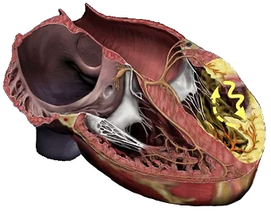
- Vào lại giải phẫu là cơ chế thường gặp nhất của vào lại
- Trung tâm của vòng vào lại được tạo bởi một chướng ngại vật giải phẫu:
- Sẹo nhồi máu cơ tim (thường gặp nhất)
- Van tim
- Các rối loạn nhịp liên quan đến vào lại giải phẫu:
- Nhịp nhanh thất sau nhồi máu
- Cuồng nhĩ (atrial flutter)
- AVRT (nhịp nhanh vào lại nhĩ thất)
- AVNRT (nhịp nhanh vào lại nút nhĩ thất)
- Nhịp nhanh thất do vào lại nhánh (branch reentry ventricular tachycardia)
Vào lại chức năng
- Một hàng rào chức năng hình thành
- Liên quan tới thay đổi điện sinh lý của cơ tim do:
- Thiếu máu cục bộ
- Rối loạn điện giải
- Sử dụng một số thuốc chống loạn nhịp
- Vào lại chức năng có thể gồm nhiều cơ chế:
- Vào lại kiểu vòng dẫn đầu
- Vào lại bất đẳng hướng
- Vào lại hình số 8
- Vào lại kiểu phản xạ
- Vào lại kiểu sóng xoắn (rotor)
- Vào lại pha 2
Vào lại kiểu vòng dẫn đầu
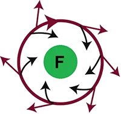
- Trung tâm của vòng vào lại được tạo bởi một hàng rào chức năng (F)
- Các xung động từ vòng vào lại cũng hướng vào trung tâm
- Chúng duy trì trung tâm trong thời kỳ trơ tuyệt đối
- Trung tâm của vòng vào lại do đó không thể bị kích thích
(nó bất hoạt về mặt điện học)
- Các rối loạn nhịp liên quan đến vào lại kiểu vòng dẫn đầu:
- Rung nhĩ (atrial fibrillation)
- Rung thất (ventricular fibrillation)
Vào lại bất đẳng hướng
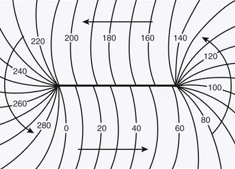
- Dẫn truyền đẳng hướng (isotropic conduction)
- Có tính chất dẫn truyền như nhau theo mọi hướng
- Dẫn truyền bất đẳng hướng (anisotropic conduction)
- Không có tính chất như nhau theo mọi hướng
- Dẫn truyền xung động qua cơ tim là bất đẳng hướng
- Sự lan truyền xung động
- Nhanh - theo chiều dọc (longitudinal direction — qua gap junction)
- Chậm - theo chiều ngang (transversal direction)
- Trong vào lại bất đẳng hướng
- Một đường trơ (refractory line) hình thành trong cơ tim
- Và vòng vào lại di chuyển vòng tròn quanh đường này
- Tốc độ xung động được biểu thị bằng ms
- Một đường trơ (refractory line) hình thành trong cơ tim
- Các rối loạn nhịp liên quan đến vào lại bất đẳng hướng:
- Nhịp nhanh thất
Vào lại hình số 8
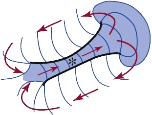
- Có 2 vòng vào lại
- Trông giống hình số tám (8)
- Các xung động di chuyển vòng tròn
- Theo chiều kim đồng hồ và ngược chiều kim đồng hồ
- Chúng dùng chung 1 đường dẫn chung,
đường này có thể được ngăn cách bởi:- Hàng rào chức năng hoặc hàng rào giải phẫu
- Các rối loạn nhịp liên quan đến vào lại hình số 8:
- Nhịp nhanh thất trong nhồi máu
Vào lại kiểu phản xạ
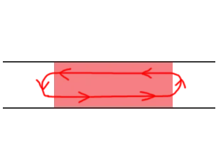
- Đây là một cơ chế vào lại không điển hình
- Vì xung động không di chuyển vòng tròn trong một vòng khép kín
- Xung động dao động dọc theo một trục thẳng
- Đoạn cơ tim thẳng
- Có vùng bị biến đổi về điện sinh lý
- Ở ranh giới của vùng cơ tim bị biến đổi, có một vùng
- Đảo ngược hướng của xung động (điện thế hoạt động)
- Xung động do đó dao động "lên và xuống"
- Dọc theo đoạn cơ tim thẳng
- Có thể xảy ra trên một diện tích 1-2mm^2
- Khó phân biệt với tính tự động lạc chỗ
Vào lại kiểu sóng xoắn (rotor)
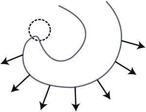
- Phần trung tâm chứa một lõi trơ (refractory core)
- Một sóng di chuyển vòng tròn quanh lõi này
- Sóng có thể di chuyển vòng tròn trong không gian 2 chiều hoặc 3 chiều
- Các xung động phát ra từ sóng này và hoạt hoá cơ tim
- Các rối loạn nhịp liên quan đến vào lại kiểu sóng xoắn (rotor):
- Rung nhĩ
- Rung thất
- Nhịp nhanh thất đa hình
Vào lại pha 2
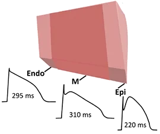
- Điện thế hoạt động (AP) trong thành cơ tim
- Khác nhau một phần ở
- Thượng tâm mạc (epicardium)
- Lớp cơ tim giữa (mid-myocardium — tế bào M)
- Nội tâm mạc (endocardium)
- Khác nhau một phần ở
- AP cũng khác nhau một phần ở
- Thất phải và thất trái
- Sự phân tán tái cực xuyên thành (transmural repolarization dispersion)
- Là sự khác biệt về thời gian của các điện thế hoạt động (chủ yếu là tái cực)
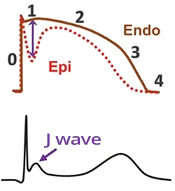
- Trong trường hợp có rối loạn chức năng cơ tim
(ví dụ rối loạn điện giải, thuốc, thiếu máu cục bộ) - Có thể xuất hiện sự khác biệt giữa pha 1 và pha 2 của điện thế hoạt động
- Đặc biệt là giữa nội tâm mạc và thượng tâm mạc
- Điều này biểu hiện trên ECG là thay đổi sau phức bộ QRS
- Thường gặp nhất là sóng J (J wave)
- Điều này biểu hiện trên ECG là thay đổi sau phức bộ QRS
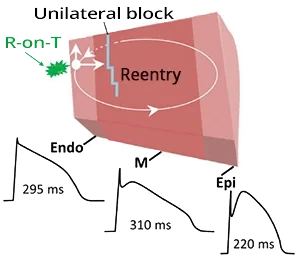
- Vào lại pha 2
- Là một dạng vào lại chức năng xảy ra khi có rối loạn pha 2 của điện thế hoạt động
- Vào lại thường được khởi phát nhất bởi ngoại tâm thu thất (VES)
- Vòng vào lại di chuyển giữa nội tâm mạc và thượng tâm mạc
- Xung động không gặp thời kỳ trơ tuyệt đối của chính nó
- Xung động về cơ bản dao động giữa nội tâm mạc và thượng tâm mạc
- Đây không phải là vào lại vòng tròn điển hình
Các hội chứng sóng J
- Các hội chứng sóng J (J wave syndromes): là những hội chứng có rối loạn pha 2 của điện thế hoạt động
- Trên ECG, chúng gây ra thay đổi sau phức bộ QRS:
- Hội chứng Brugada
- Tái cực sớm lành tính (benign early repolarization)
- Các rối loạn nhịp trong vào lại pha 2
- Nhịp nhanh thất
- Rung thất
- Các rối loạn nhịp phải xảy ra khi có rối loạn pha 2 của điện thế hoạt động
- Thường gặp nhất là trong các hội chứng sóng J:
- Hội chứng Brugada
- Tái cực sớm lành tính
- Thường gặp nhất là trong các hội chứng sóng J:
Nguồn tài liệu (Sources)
Nguồn: ECG BOOK — www.ecgbook.com/mechanisms-arrhythmias
- ECG from Basics to Essentials Step by Step
- Litfl.com
- Ecgwaves.com
- Metealpaslan.com
- Medmastery.com
- Uptodate.com
- Ecgpedia.org
- Wikipedia.org
- Strong Medicine
- Understanding Pacemakers